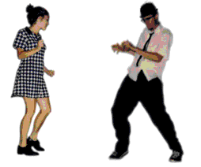
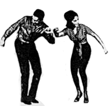

Second Wave of Ska
For more information on 2nd wave Ska aka 2-Tone, simply click on the following link: Skazine

The Specials are the most popular 2-Tone Ska group from the 2nd wave Ska became known as 2-Tone due to many of its supporters who wore checkerboard pattern clothing.
In 1981, their hit "Ghost Town" hit #1 on the UK charts..
The English Beat also known as The Beat were another popular Ska group from the 2-Tone era. Their early saxophonist Saxa had previously played with first wave Ska musicians such as Desmond Dekker and Prince Buster.

Another popular UK 2-Tone Ska group is Madness. With such hits as "Wings of a Dove" and "House of Fun", their biggest hit wasn't even a Ska sounding song, but "Our House" was still a #1 single on both the UK and the US charts.
For more information on 2nd wave Ska aka 2-Tone, simply click on the following link: Skazine